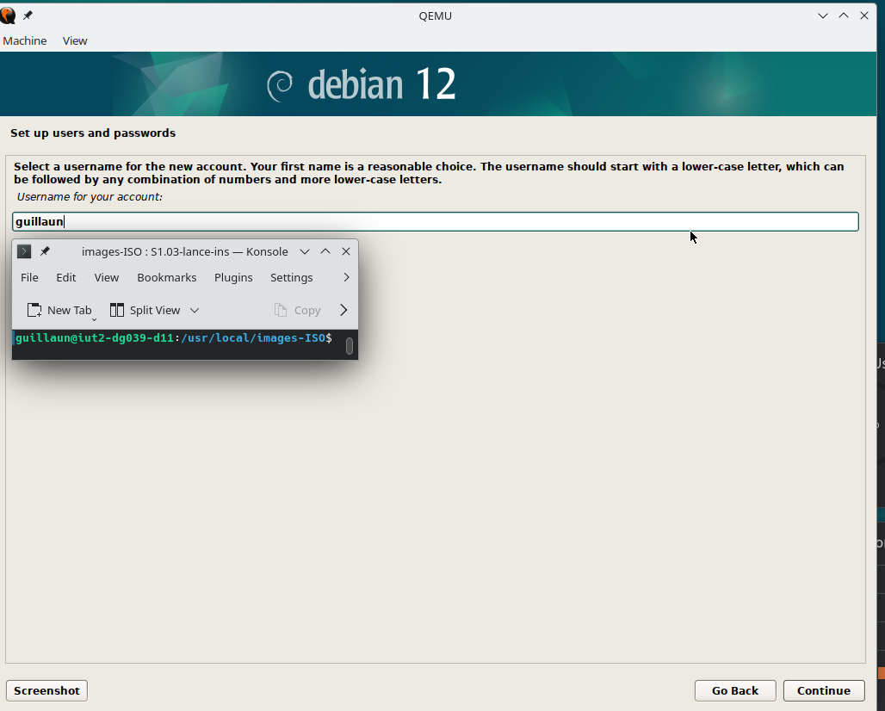
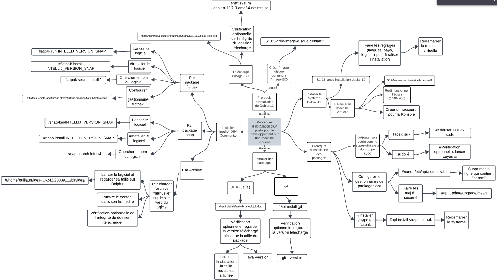

Installation d’un poste pour le développement
- Individuel
- Compétences techniques :
- Maîtrise de la console Linux
- Date :
- 2024
- Le projet en quelques mots :
- J’ai appris à installer et configurer un poste de travail ainsi que des outils de développement sur une machine virtuelle. J’ai installé les systèmes d’exploitation Debian 11 et Debian 12 ainsi que les IDE NetBean et IntelliJ IDEA.
L’objectif était d’être capable de le faire en autonomie et d’être capable de créer une carte mentale explicative de l’installation.
Le projet s’est déroulé sur 3 jours.
Le projet en images :

